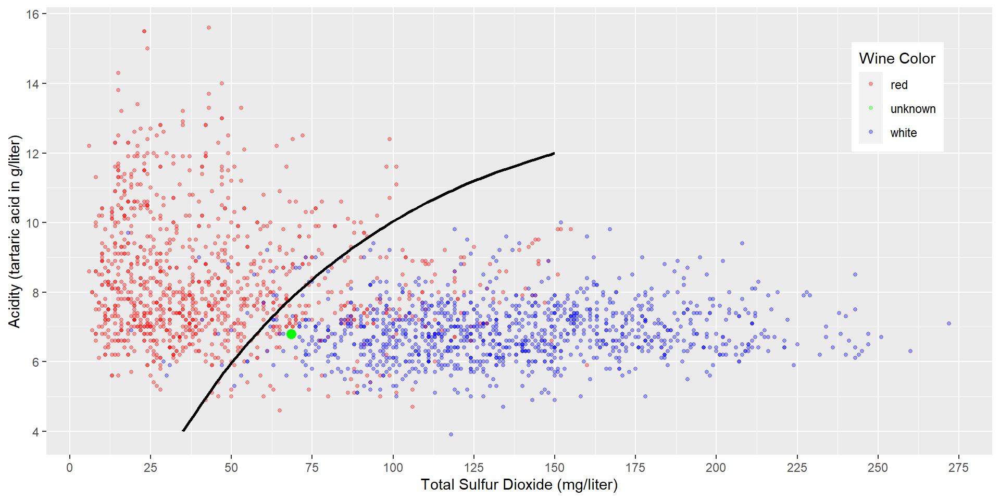
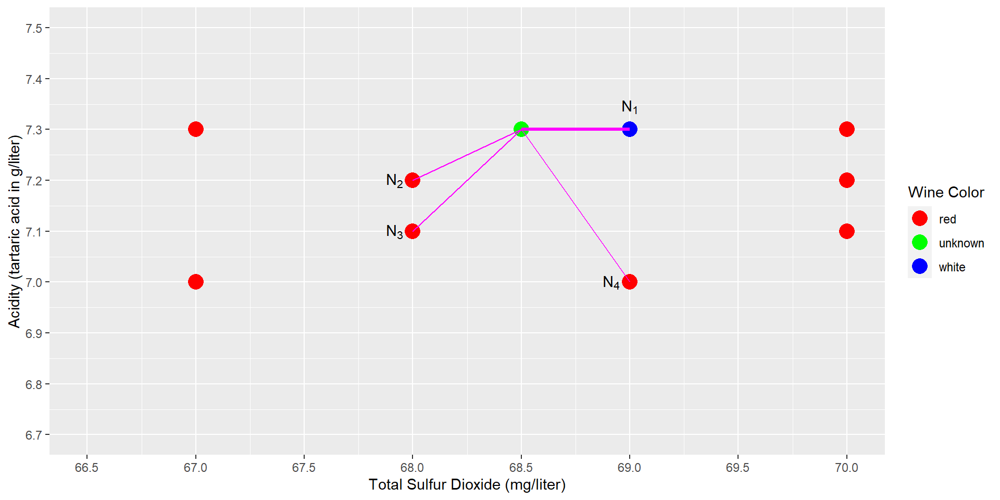

k Nearest Neighbors
Projects: 1) Identifying Wine Color and 2) Optical Character Recognition
Before we Begin Let Us Do A Thought Experiment
I want to find somebody to spend a Saturday afternoon with and I am looking for somebody most similar to me (nearest neighbor) in terms of:
- Sex (coded as 0 for female, and 1 for male)
- Age (coded in years)
- Outdoor sports interest (coded from 0 (no interest) to 10 (enthusiast))»
(all categories matter the same to me)
Let us do the Calculation for a Similarity Score
(average absolute differences)
Sake of argument: I am male (1), 50 years, outdoor sports score 7:
- first candidate a student
. - second candidate a women (0) 51 years old, athletic outdoor (score=9)
- third candidate a man (1), 53 years, athletic outdoor (score=9)
Let us do the Calculation for a Similarity Score
(average absolute differences — normalized to 0 – 10)
Sake of argument: I am male (1), 50 years, outdoor sports score 7:
- first candidate a student
. - second candidate a women (0), 51 years old, athletic outdoor (score=9)
- third candidate is an athletic outdoor (score=9) man (1)
53 years»
Overwiew
In this session you will learn:
What is the underlying idea of k-Nearest Neighbors
How similarity can be measured with Euclidean distance
Why scaling predictor variables is important for some machine learning models
Why the tidymodels package makes it easy to work with machine learning models
How you can define a recipe to pre-process data with the
tidymodelspackageHow you can define a model-design with the
tidymodelspackageHow you can create a machine learning workflow with the
tidymodelspackageHow metrics derived from a confusion matrix can be used to asses prediction quality
Why you have to be careful when interpreting accuracy, when you work with unbalanced observations
How a machine learning model can process images and how OCR (Optical Character Recognition) works»
About the Wine Dataset
We will work with a publicly available wine dataset1 containing 3,198 observations about different wines and their chemical properties.
Our goal is to develop a k-Nearest Neighbors model that can predict if a wine is red or white based on the wine’s chemical properties.»
Raw Observations from Wine Dataset
# A tibble: 3,198 × 13
wineColor acidity volatileAcidity citricAcid residualSugar Chlorides
<chr> <dbl> <dbl> <dbl> <dbl> <dbl>
1 red 10.8 0.32 0.44 1.6 0.063
2 white 6.4 0.31 0.39 7.5 0.04
3 white 9.4 0.28 0.3 1.6 0.045
4 white 8.2 0.22 0.36 6.8 0.034
5 white 6.4 0.29 0.44 3.6 0.197
6 red 6.7 0.855 0.02 1.9 0.064
7 red 11.8 0.38 0.55 2.1 0.071
8 white 6.7 0.25 0.23 7.2 0.038
9 red 7.5 0.38 0.57 2.3 0.106
10 red 7.1 0.27 0.6 2.1 0.074
# … with 3,188 more rows, and 7 more variables: freeSulfurDioxide <dbl>,
# totalSulfurDioxide <dbl>, Density <dbl>, pH <dbl>, sulphates <dbl>,
# alcohol <dbl>, quality <dbl>»
Observations from Wine Dataset for Selected Variables
Sulfor Dioxide and Acidity
Note we use clean_names("upper_camel") from the janitor package to change all column (variable) names to UpperCamel.
# A tibble: 3,198 × 3
WineColor Sulfur Acidity
<fct> <dbl> <dbl>
1 red 37 10.8
2 white 213 6.4
3 white 139 9.4
4 white 90 8.2
5 white 183 6.4
6 red 38 6.7
7 red 19 11.8
8 white 220 6.7
9 red 12 7.5
10 red 25 7.1
# … with 3,188 more rows»
Before Starting with k Nearest Neighbors
Let us find some eyeballing techniques that are related to various machine learning models»
Eye Balling Techniques to Identify Red and White Wines
try eyeballing the data

Acidity and Total Sulfur Dioxide Related to Wine Color
Eye Balling Techniques to Identify Red and White Wines
Horizontal Boundary

Horizontal Decision Boundary for Acidity and Total Sulfur Dioxide Related to Wine Color
Confusion Matrix
Truth
Prediction Red Wine White Wine
Red Wine TP: 'half' FP: 'few'
White Wine FN: 'half' TN: 'most'Eyeballing Techniques to Identify Red and White Wines
Creating Subspaces Like Similar to a Decision Tree
Sub-Space Boundaries for Acidity and Total Sulfur Dioxide Related to Wine Color
Confusion Matrix
Truth
Prediction Red Wine White Wine
Red Wine TP: 'most' FP: 'few'
White Wine FN: 'few' TN: 'most'Eyeballing Techniques to Identify Red and White Wines
Using a non-linear Decision Boundary Like a Neural Network
Curved Decision Boundary for Acidity and Total Sulfur Dioxide Related to Wine Color
Confusion Matrix
Truth
Prediction Red Wine White Wine
Red Wine TP: 'most' FP: 'few'
White Wine FN: 'few' TN: 'most'So, how does k Nearest Neighbors Work?
k Nearest Neighbors k=1

Acidity and Total Sulfur Dioxide Related to Wine Color»
k Nearest Neighbors k=1

Predicting Wine Color with k-Nearest Neighbors (k=1)
How to calculate Euclidean Distance for Two Variables
Assume our observations have two predictor variables \(x\) and \(y\). We compare the unknown point \(p\) to one of the points from the training data (e,g., point \(i\)): \[Dist_i=\sqrt{(x_p-x_i)^2+(y_p-y_i)^2}\] »
How to calculate Euclidean Distance for Three Variables
Assume our observations have three predictor variables \(x\), \(y\), and \(z\). We compare the unknown point \(p\) to one of the points from the training data (e,g., point \(i\)): \[Dist_i=\sqrt{(x_p-x_i)^2+(y_p-y_i)^2+(z_p-z_i)^2}\] »
How to calculate Euclidean Distance for N Variables
Assume our observations have \(N\) predictor variables \(v_j\) with \(j=1 ... N\). We compare the unknown point \(p\) to one of the points from the training data (e,g., point \(i\)): \[Dist_i=\sqrt{\sum_{j=1}^N(v_{p,j}-v_{i,j})^2}\] »
k Nearest Neighbors k=4 (for a different unknown wine)

Acidity and Total Sulfur Dioxide Related to Wine Color
k Nearest Neighbors k=4 (for a different unknown wine)
4 nearest neighbors vote on “red” vs. “white”
Predicting Wine Color with k-Nearest Neighbors (k=4)
k Nearest Neighbors k=4 (for a different unknown wine)
Watch the scale: g/liter vs. mg/liter. That does not look right!
Acidity and Total Sulfur Dioxide Related to Wine Color »
A Few Common Scaling Options
Same units
Divide or multiply to get the same units. This is often not possible (e.g.,
HeightandWeight). Or it is not feasible (e.g.AlcoholandStrawberryJuicecontent in spiked strawberry drink))Rescaling
Generates a variable \(y\) that is scaled to a range between 0 and 1 based on the original variable’s value \(x\), its minimum \(x_{min}\) and its maximum \(x_{max}\): \[ y= \frac{x-x_{min}}{x_{max} - x_{min}}\]
Z-Score Normalization
Z-score normalization uses the mean (\(\overline x\)) and the standard deviation (\(s\)) of a variable to scale the variable \(x\) to the variable \(z\):
\[z=\frac{x-\overline x}{s}\]»
Time to Run k-Nearest Neighbors
Loading Data and Selecting Variables
# A tibble: 3,198 × 3
WineColor Sulfur Acidity
<fct> <dbl> <dbl>
1 red 37 10.8
2 white 213 6.4
3 white 139 9.4
4 white 90 8.2
5 white 183 6.4
6 red 38 6.7
7 red 19 11.8
8 white 220 6.7
9 red 12 7.5
10 red 25 7.1
# … with 3,188 more rows»
Time to Run k-Nearest Neighbors
Generate Training and Testing Data (Splitting):
# A tibble: 2,238 × 3
WineColor Sulfur Acidity
<fct> <dbl> <dbl>
1 red 37 10.8
2 red 38 6.7
3 red 12 7.5
4 red 25 7.1
5 red 114 8
6 red 66 7.6
7 red 49 6.8
8 red 110 7
9 red 44 6.5
10 red 10 10.4
# … with 2,228 more rows# A tibble: 960 × 3
WineColor Sulfur Acidity
<fct> <dbl> <dbl>
1 white 90 8.2
2 red 19 11.8
3 white 220 6.7
4 red 131 7.8
5 white 161 7
6 red 41 9.9
7 white 156 7.8
8 white 150 6.5
9 red 102 7.9
10 red 11 5.8
# … with 950 more rowsTime to Run k-Nearest Neighbors
Click here to find a reference list for various Step_ commands
Recipe: Prepare Data for Analysis:
Or:
Recipe
Inputs:
role #variables
outcome 1
predictor 2
Operations:
Removing rows with NA values in <none>
Centering and scaling for all_predictors()Time to Run k-Nearest Neighbors
Click here to find a reference list for various Step_ commands
Creating a Model Design:
K-Nearest Neighbor Model Specification (classification)
Main Arguments:
neighbors = 4
weight_func = rectangular
Computational engine: kknn Time to Run k-Nearest Neighbors
Putting it all together in a fitted workflow:
══ Workflow [trained] ══════════════════════════════════════════════════════════
Preprocessor: Recipe
Model: nearest_neighbor()
── Preprocessor ────────────────────────────────────────────────────────────────
2 Recipe Steps
• step_naomit()
• step_normalize()
── Model ───────────────────────────────────────────────────────────────────────
Call:
kknn::train.kknn(formula = ..y ~ ., data = data, ks = min_rows(4, data, 5), kernel = ~"rectangular")
Type of response variable: nominal
Minimal misclassification: 0.1000894
Best kernel: rectangular
Best k: 4Time to Run k-Nearest Neighbors
How to use the fitted workflow to predict the wine color for the wines in the testing dataset:
- Start with observation \(i=1\) from
DataTest(the first observation). - Take observation \(i\) from
DataTestand useAcidityandSulfurto calculate the Euclidean distance to each of the observations ofDataTrain. - Isolate the 4 observations with the smallest Euclidean distance and use the majority of their wine color as a prediction for observation \(i\) from
DataTest(in case of a par, decide randomly). - Increase \(i\) by one (i.e., take the next observation from
DataTest) and go to step 2 (until allDataTestobservations are processed).
Time to Run k-Nearest Neighbors
Predicting with the fitted workflow using predict() (not exactly helpful!):
# A tibble: 960 × 1
.pred_class
<fct>
1 white
2 red
3 white
4 white
5 white
6 red
7 white
8 white
9 red
10 red
# … with 950 more rowsTime to Run k-Nearest Neighbors
Predicting with the fitted workflow using augment() which augments DataTest with the predictions:
# A tibble: 6 × 6
WineColor Sulfur Acidity .pred_class .pred_red .pred_white
<fct> <dbl> <dbl> <fct> <dbl> <dbl>
1 white 90 8.2 white 0.25 0.75
2 red 19 11.8 red 1 0
3 white 220 6.7 white 0 1
4 red 131 7.8 white 0.25 0.75
5 white 161 7 white 0 1
6 red 41 9.9 red 1 0 Having a Data Frame with truth and esimate we can calculate performance metrics
Confusion Matrix:
Truth
Prediction red white
red 436 46
white 44 434Reading the Confusion Matrix
Truth
Prediction Red Wine White Wine
Red Wine TP: 436 FP: 46
White Wine FN: 44 TN: 434 The positive class (wine is “red”) is in the first column. 436 of the positives are classified correctly (TR: true positives), and 44 positives are incorrectly classified (FN: false negatives).
The negative class (wine is “white”) is in the second column. 44 negatives are incorrectly classified (FP: false positives), and 434 negatives are classified correctly (TN: true negatives).
Accuracy: Number of wines on diagonal/number of all wines:
Warning: Be careful with the Accuracy Rate
The Story of Dr. Nebulous’s Gamblers System
Dr. Nebulous offers a 97% Machine Learning Gambling Prediction. Here is how it works: Gamblers can buy a prediction for a fee of $5. Dr. Nebulous will then run his famous machine learning model and send a closed envelope with the prediction. The gambler is supposed to open the envelope in the casino, right before placing a bet of $100 on a number in roulette. The envelope contains a message that states either “You will win” or “You will lose”, which allows the gambler to act accordingly by either bet or not bet.
Dr. Nebulous claims that a “clinical trial” of 1000 volunteers, who opened the envelope after they had bet on a number in roulette, shows an accuracy of 97.3%.
How could Dr. Nebulous have such a precise model?
Warning: Be careful with thethe Accuracy Rate
The Story of Dr. Nebulous’s Gamblers System
The trick is Dr. Nebulous’s machine learning model uses the naive prognosis: It always predicts “You will lose”.
Here is the confusion matrix from the 1,000 volunteers trial:
Truth
Prediction Win Lose
Win 0 0
Lose 27 997Roulette has 37 numbers to bet on. Chance to win is: \(\frac{1}{37}=0.027\).
Out of the 1000 volunteers, 27 are expected to win, and 973 are expected to lose.
\[Accuracy=\frac{0+973}{1000}=0.973\]
Warning: Be careful with the Accuracy Rate
The Story of Dr. Nebulous’s Gamblers System
Truth
Prediction Win Lose
Win 0 0
Lose 27 997However, when we look at the correct positive and the correct negative rate separately, we see that Dr. Nebulous’ accuracy rate (although correct) makes little sense.
The correct negative rate (specificity) is 100%
The correct positive rate (sensitivity) is zero (out of the 27 winners, all were falsely predicted as “You will lose”).
This example shows: When interpreting the confusion matrix, you must look at accuracy, sensitivity, and specificity simultaneously
Time to Run k-Nearest Neighbors 🤓
accuracy(), sensitivity() and specificity() for the wine data:
# A tibble: 1 × 3
.metric .estimator .estimate
<chr> <chr> <dbl>
1 accuracy binary 0.906# A tibble: 1 × 3
.metric .estimator .estimate
<chr> <chr> <dbl>
1 sensitivity binary 0.908# A tibble: 1 × 3
.metric .estimator .estimate
<chr> <chr> <dbl>
1 specificity binary 0.904Can we improve by using all predictors.»
Project: Design a Machine Learning Workflow for Optical Character Recognition »
MNIST Data Set
You will develop a machine learning model based on k-Nearest Neighbors to recognize handwritten digits from images.
You will use the MNIST dataset, a standard dataset for image recognition in machine learning (60,000 images for training and 10,000 images for testing). Developed by LeCun, Cortes, and Burges (2010) based on two datasets from handwritten digits obtained from Census workers and high school students.
We will use only the first 500 images of the original MNIST dataset to speed up the k-Nearest Neighbors model’s training time.
Visualization of the First Six Images from the MNIST Data Set

How a Image is Stored in the Mnist Dataset

Image of a Handwritten Nine
The image has 28 rows and 28 columns. Each of the 784 cells (pixels) holds a value between 0 (black) and 255 (white)
How a Image is Stored in the Mnist Dataset
- Pixel values for a single image are not stored in a table. Ohterwise we would end-up with a table containing tables.
- Pixel values are stored as one row for each image.
- Concatenating the 28 rows of an image into one row with 28*28=784 cells (pixels)
Three Rows from the Data Frame of the MNIST Dataset
Label Pix1 Pix2 Pix3 Pix4 Pix5 Pix6 Pix7 Pix8 Pix9 Pix10 Pix11 Pix12 Pix13 Pix14 Pix15 Pix16 Pix17 Pix18 Pix19 Pix20 Pix21 Pix22 Pix23 Pix24 Pix25 Pix26 Pix27 Pix28 Pix29 Pix30 Pix31 Pix32 Pix33 Pix34 Pix35 Pix36 Pix37 Pix38 Pix39 Pix40 Pix41 Pix42 Pix43 Pix44 Pix45 Pix46 Pix47 Pix48 Pix49 Pix50 Pix51 Pix52 Pix53 Pix54 Pix55 Pix56 Pix57 Pix58 Pix59 Pix60 Pix61 Pix62 Pix63 Pix64 Pix65 Pix66 Pix67 Pix68 Pix69 Pix70 Pix71 Pix72 Pix73 Pix74 Pix75 Pix76 Pix77 Pix78 Pix79 Pix80 Pix81 Pix82 Pix83 Pix84 Pix85 Pix86 Pix87 Pix88 Pix89 Pix90 Pix91 Pix92 Pix93 Pix94 Pix95 Pix96 Pix97 Pix98 Pix99 Pix100 Pix101 Pix102 Pix103 Pix104 Pix105 Pix106 Pix107 Pix108 Pix109 Pix110 Pix111 Pix112 Pix113 Pix114 Pix115 Pix116 Pix117 Pix118 Pix119 Pix120 Pix121 Pix122 Pix123 Pix124 Pix125 Pix126
1 0 0 0 0 0 0 0 0 0 0 0 0 0 0 0 0 0 0 0 0 0 0 0 0 0 0 0 0 0 0 0 0 0 0 0 0 0 0 0 0 0 0 0 0 0 0 0 0 0 0 0 0 0 0 0 0 0 0 0 0 0 0 0 0 0 0 0 0 0 0 0 0 0 0 0 0 0 0 0 0 0 0 0 0 0 0 0 0 0 0 0 0 0 0 0 0 0 0 0 0 0 0 0 0 0 0 0 0 0 0 0 0 0 0 0 0 0 0 0 0 0 0 0 0 5 138 253
2 5 0 0 0 0 0 0 0 0 0 0 0 0 0 0 0 0 0 0 0 0 0 0 0 0 0 0 0 0 0 0 0 0 0 0 0 0 0 0 0 0 0 0 0 0 0 0 0 0 0 0 0 0 0 0 0 0 0 0 0 0 0 0 0 0 0 0 0 0 0 0 0 0 0 0 0 0 0 0 0 0 0 0 0 0 0 0 0 0 0 0 0 0 0 0 0 0 0 0 0 0 0 0 0 0 0 0 0 0 0 0 0 0 0 0 0 0 0 0 0 0 0 0 0 0 0 0
3 3 0 0 0 0 0 0 0 0 0 0 0 0 0 0 0 0 0 0 0 0 0 0 0 0 0 0 0 0 0 0 0 0 0 0 0 0 0 0 0 0 0 0 0 0 0 0 0 0 0 0 0 0 0 0 0 0 0 0 0 0 0 0 0 0 0 0 0 0 0 0 0 0 0 0 0 0 0 0 0 0 0 0 0 0 0 0 0 0 0 0 0 0 0 0 0 0 0 0 0 0 0 0 0 0 0 0 0 0 0 0 0 0 0 0 0 0 0 0 0 0 0 0 0 0 0 0
Pix127 Pix128 Pix129 Pix130 Pix131 Pix132 Pix133 Pix134 Pix135 Pix136 Pix137 Pix138 Pix139 Pix140 Pix141 Pix142 Pix143 Pix144 Pix145 Pix146 Pix147 Pix148 Pix149 Pix150 Pix151 Pix152 Pix153 Pix154 Pix155 Pix156 Pix157 Pix158 Pix159 Pix160 Pix161 Pix162 Pix163 Pix164 Pix165 Pix166 Pix167 Pix168 Pix169 Pix170 Pix171 Pix172 Pix173 Pix174 Pix175 Pix176 Pix177 Pix178 Pix179 Pix180 Pix181 Pix182 Pix183 Pix184 Pix185 Pix186 Pix187 Pix188 Pix189 Pix190 Pix191 Pix192 Pix193 Pix194 Pix195 Pix196 Pix197 Pix198 Pix199 Pix200 Pix201 Pix202 Pix203 Pix204 Pix205 Pix206 Pix207 Pix208 Pix209 Pix210 Pix211 Pix212 Pix213 Pix214 Pix215 Pix216 Pix217 Pix218 Pix219 Pix220 Pix221 Pix222 Pix223 Pix224 Pix225 Pix226 Pix227 Pix228 Pix229 Pix230 Pix231 Pix232 Pix233 Pix234 Pix235 Pix236 Pix237
1 148 22 0 0 0 0 0 0 0 0 0 0 0 0 0 0 0 0 0 0 0 0 0 0 0 120 252 252 231 245 59 0 0 0 0 0 0 0 0 0 0 0 0 0 0 0 0 0 0 0 0 0 0 161 252 185 122 253 156 101 44 0 0 0 0 0 0 0 0 0 0 0 0 0 0 0 0 0 0 0 19 236 252 119 21 169 252 252 236 155 0 0 0 0 0 0 0 0 0 0 0 0 0 0 0 0 0 0 181 252 221
2 0 0 0 0 0 0 0 0 0 0 0 0 0 0 0 0 0 0 0 0 0 0 13 191 255 253 253 253 253 192 113 191 113 191 255 90 0 0 0 0 0 0 0 0 0 0 0 0 0 0 29 252 253 252 252 252 252 253 252 252 252 252 253 243 50 0 0 0 0 0 0 0 0 0 0 0 0 0 60 252 253 201 195 195 195 222 201 208 252 252 196 195 43 0 0 0 0 0 0 0 0 0 0 0 0 0 169 252 253 27 0
3 0 0 0 0 0 0 0 0 0 0 0 0 0 0 0 0 0 0 0 0 0 0 0 149 253 253 253 96 11 0 0 0 0 0 0 0 0 0 0 0 0 0 0 0 0 0 0 0 0 0 147 253 252 252 252 252 189 0 0 0 0 0 0 0 0 0 0 0 0 0 0 0 0 0 0 0 0 26 236 253 252 252 252 252 247 99 0 0 0 0 0 0 0 0 0 0 0 0 0 0 0 0 0 0 57 224 252 253 235 160 160
Pix238 Pix239 Pix240 Pix241 Pix242 Pix243 Pix244 Pix245 Pix246 Pix247 Pix248 Pix249 Pix250 Pix251 Pix252 Pix253 Pix254 Pix255 Pix256 Pix257 Pix258 Pix259 Pix260 Pix261 Pix262 Pix263 Pix264 Pix265 Pix266 Pix267 Pix268 Pix269 Pix270 Pix271 Pix272 Pix273 Pix274 Pix275 Pix276 Pix277 Pix278 Pix279 Pix280 Pix281 Pix282 Pix283 Pix284 Pix285 Pix286 Pix287 Pix288 Pix289 Pix290 Pix291 Pix292 Pix293 Pix294 Pix295 Pix296 Pix297 Pix298 Pix299 Pix300 Pix301 Pix302 Pix303 Pix304 Pix305 Pix306 Pix307 Pix308 Pix309 Pix310 Pix311 Pix312 Pix313 Pix314 Pix315 Pix316 Pix317 Pix318 Pix319 Pix320 Pix321 Pix322 Pix323 Pix324 Pix325 Pix326 Pix327 Pix328 Pix329 Pix330 Pix331 Pix332 Pix333 Pix334 Pix335 Pix336 Pix337 Pix338 Pix339 Pix340 Pix341 Pix342 Pix343 Pix344 Pix345 Pix346 Pix347 Pix348
1 25 0 3 169 252 252 252 106 0 0 0 0 0 0 0 0 0 0 0 0 0 0 0 0 11 255 253 173 0 0 0 0 32 229 253 231 0 0 0 0 0 0 0 0 0 0 0 0 0 0 0 0 136 253 244 56 0 0 0 0 0 186 252 245 80 0 0 0 0 0 0 0 0 0 0 0 0 0 0 68 246 253 174 0 0 0 0 0 0 68 246 253 206 0 0 0 0 0 0 0 0 0 0 0 0 0 0 93 252 253 92
2 0 0 38 9 19 84 84 0 0 0 0 0 0 0 0 0 0 0 0 0 0 0 0 169 252 253 27 0 0 0 0 0 0 0 0 0 0 0 0 0 0 0 0 0 0 0 0 0 0 0 0 170 253 141 0 0 0 0 0 0 0 0 0 0 0 0 0 0 0 0 0 0 0 0 0 0 0 0 51 243 252 140 0 19 85 38 38 85 66 0 0 0 0 0 0 0 0 0 0 0 0 0 0 0 0 0 166 252 252 229 197
3 202 253 244 56 0 0 0 0 0 0 0 0 0 0 0 0 0 0 0 0 0 122 252 252 243 60 0 0 63 253 252 121 0 0 0 0 0 0 0 0 0 0 0 0 0 0 0 0 0 185 253 253 168 0 0 19 128 255 253 190 5 0 0 0 0 0 0 0 0 0 0 0 0 0 0 0 0 163 252 231 42 0 0 207 252 253 252 252 67 0 0 0 0 0 0 0 0 0 0 0 0 0 0 0 0 51 183 48 0 0 0
Pix349 Pix350 Pix351 Pix352 Pix353 Pix354 Pix355 Pix356 Pix357 Pix358 Pix359 Pix360 Pix361 Pix362 Pix363 Pix364 Pix365 Pix366 Pix367 Pix368 Pix369 Pix370 Pix371 Pix372 Pix373 Pix374 Pix375 Pix376 Pix377 Pix378 Pix379 Pix380 Pix381 Pix382 Pix383 Pix384 Pix385 Pix386 Pix387 Pix388 Pix389 Pix390 Pix391 Pix392 Pix393 Pix394 Pix395 Pix396 Pix397 Pix398 Pix399 Pix400 Pix401 Pix402 Pix403 Pix404 Pix405 Pix406 Pix407 Pix408 Pix409 Pix410 Pix411 Pix412 Pix413 Pix414 Pix415 Pix416 Pix417 Pix418 Pix419 Pix420 Pix421 Pix422 Pix423 Pix424 Pix425 Pix426 Pix427 Pix428 Pix429 Pix430 Pix431 Pix432 Pix433 Pix434 Pix435 Pix436 Pix437 Pix438 Pix439 Pix440 Pix441 Pix442 Pix443 Pix444 Pix445 Pix446 Pix447 Pix448 Pix449 Pix450 Pix451 Pix452 Pix453 Pix454 Pix455 Pix456 Pix457 Pix458 Pix459
1 0 0 0 0 0 0 0 188 253 244 56 0 0 0 0 0 0 0 0 0 0 0 0 0 93 252 243 50 0 0 0 0 0 0 0 116 253 252 69 0 0 0 0 0 0 0 0 0 0 0 0 0 208 253 221 0 0 0 0 0 0 0 0 0 255 253 69 0 0 0 0 0 0 0 0 0 0 0 0 13 215 252 95 0 0 0 0 0 0 0 0 0 253 252 69 0 0 0 0 0 0 0 0 0 0 0 0 70 252 252 0
2 209 252 221 222 252 239 197 119 0 0 0 0 0 0 0 0 0 0 0 0 0 0 57 234 252 252 253 252 252 252 252 253 252 252 252 252 16 0 0 0 0 0 0 0 0 0 0 0 0 0 85 252 252 252 253 252 252 252 252 253 173 252 252 252 203 94 0 0 0 0 0 0 0 0 0 0 0 0 0 32 140 140 0 0 0 0 0 0 0 32 140 203 255 206 25 0 0 0 0 0 0 0 0 0 0 0 0 0 0 0 0
3 207 252 253 252 252 227 131 0 0 0 0 0 0 0 0 0 0 0 0 0 0 0 0 0 0 0 0 0 207 252 253 252 252 252 252 0 0 0 0 0 0 0 0 0 0 0 0 0 0 0 0 0 0 0 0 0 113 242 243 137 168 252 252 210 0 0 0 0 0 0 0 0 0 0 0 0 0 0 0 0 0 0 0 0 0 0 0 0 0 136 241 255 92 0 0 0 0 0 0 0 0 0 0 0 0 0 0 0 0 0 0
Pix460 Pix461 Pix462 Pix463 Pix464 Pix465 Pix466 Pix467 Pix468 Pix469 Pix470 Pix471 Pix472 Pix473 Pix474 Pix475 Pix476 Pix477 Pix478 Pix479 Pix480 Pix481 Pix482 Pix483 Pix484 Pix485 Pix486 Pix487 Pix488 Pix489 Pix490 Pix491 Pix492 Pix493 Pix494 Pix495 Pix496 Pix497 Pix498 Pix499 Pix500 Pix501 Pix502 Pix503 Pix504 Pix505 Pix506 Pix507 Pix508 Pix509 Pix510 Pix511 Pix512 Pix513 Pix514 Pix515 Pix516 Pix517 Pix518 Pix519 Pix520 Pix521 Pix522 Pix523 Pix524 Pix525 Pix526 Pix527 Pix528 Pix529 Pix530 Pix531 Pix532 Pix533 Pix534 Pix535 Pix536 Pix537 Pix538 Pix539 Pix540 Pix541 Pix542 Pix543 Pix544 Pix545 Pix546 Pix547 Pix548 Pix549 Pix550 Pix551 Pix552 Pix553 Pix554 Pix555 Pix556 Pix557 Pix558 Pix559 Pix560 Pix561 Pix562 Pix563 Pix564 Pix565 Pix566 Pix567 Pix568 Pix569 Pix570
1 0 0 0 0 0 0 0 0 0 253 252 69 0 0 0 0 0 0 0 0 0 0 0 0 70 252 252 0 0 0 0 0 0 0 0 0 43 253 252 69 0 0 0 0 0 0 0 0 0 0 0 0 70 252 252 0 0 0 0 0 0 0 0 95 230 243 117 6 0 0 0 0 0 0 0 0 0 0 0 0 32 229 253 11 0 0 0 0 0 5 55 233 253 221 0 0 0 0 0 0 0 0 0 0 0 0 0 0 0 186 252
2 0 0 0 0 0 0 0 0 140 253 252 55 0 0 0 0 0 0 0 0 0 0 0 0 0 0 0 0 0 0 0 0 0 0 0 0 110 253 252 55 0 0 0 0 0 0 0 0 0 0 0 0 0 0 0 0 0 0 0 0 0 0 0 0 0 253 252 149 0 0 0 0 0 0 0 0 0 0 0 0 0 0 0 0 0 0 0 0 0 0 0 0 79 253 252 195 0 0 0 0 0 0 0 0 0 0 0 38 113 38 0
3 0 0 0 0 0 0 0 95 253 113 0 0 0 0 0 0 0 0 0 0 0 0 0 0 0 0 0 0 0 0 0 0 0 0 0 0 253 219 19 0 0 0 0 0 0 0 0 0 0 0 0 0 0 0 0 0 0 0 0 0 0 0 0 0 211 252 69 0 0 0 0 0 0 0 0 0 0 0 0 0 0 0 0 22 32 0 0 0 0 0 0 0 191 252 69 0 0 0 0 0 0 0 0 0 0 0 0 0 0 0 0
Pix571 Pix572 Pix573 Pix574 Pix575 Pix576 Pix577 Pix578 Pix579 Pix580 Pix581 Pix582 Pix583 Pix584 Pix585 Pix586 Pix587 Pix588 Pix589 Pix590 Pix591 Pix592 Pix593 Pix594 Pix595 Pix596 Pix597 Pix598 Pix599 Pix600 Pix601 Pix602 Pix603 Pix604 Pix605 Pix606 Pix607 Pix608 Pix609 Pix610 Pix611 Pix612 Pix613 Pix614 Pix615 Pix616 Pix617 Pix618 Pix619 Pix620 Pix621 Pix622 Pix623 Pix624 Pix625 Pix626 Pix627 Pix628 Pix629 Pix630 Pix631 Pix632 Pix633 Pix634 Pix635 Pix636 Pix637 Pix638 Pix639 Pix640 Pix641 Pix642 Pix643 Pix644 Pix645 Pix646 Pix647 Pix648 Pix649 Pix650 Pix651 Pix652 Pix653 Pix654 Pix655 Pix656 Pix657 Pix658 Pix659 Pix660 Pix661 Pix662 Pix663 Pix664 Pix665 Pix666 Pix667 Pix668 Pix669 Pix670 Pix671 Pix672 Pix673 Pix674 Pix675 Pix676 Pix677 Pix678 Pix679 Pix680 Pix681
1 193 17 0 0 0 26 136 252 252 231 42 0 0 0 0 0 0 0 0 0 0 0 0 0 0 0 93 252 253 209 184 184 184 222 252 252 227 100 0 0 0 0 0 0 0 0 0 0 0 0 0 0 0 0 17 98 253 252 252 252 252 253 235 160 50 0 0 0 0 0 0 0 0 0 0 0 0 0 0 0 0 0 0 0 33 137 221 252 147 75 18 0 0 0 0 0 0 0 0 0 0 0 0 0 0 0 0 0 0 0 0
2 0 0 0 0 0 0 38 144 253 253 255 253 133 0 0 0 0 0 0 0 0 0 0 0 85 252 234 146 85 85 66 57 85 226 234 252 252 252 253 223 37 0 0 0 0 0 0 0 0 0 0 0 19 209 252 252 253 252 239 234 252 253 252 252 252 252 196 52 0 0 0 0 0 0 0 0 0 0 0 0 0 97 227 252 253 252 252 252 252 253 252 245 129 84 0 0 0 0 0 0 0 0 0 0 0 0 0 0 0 0 13
3 162 222 97 24 0 0 0 9 128 255 253 122 0 0 0 0 0 0 0 0 0 0 0 0 0 0 0 0 88 252 252 252 162 161 161 194 252 253 244 56 0 0 0 0 0 0 0 0 0 0 0 0 0 0 0 0 47 252 252 252 253 252 252 252 252 247 98 0 0 0 0 0 0 0 0 0 0 0 0 0 0 0 0 0 9 45 173 252 253 252 252 252 252 146 0 0 0 0 0 0 0 0 0 0 0 0 0 0 0 0 0
Pix682 Pix683 Pix684 Pix685 Pix686 Pix687 Pix688 Pix689 Pix690 Pix691 Pix692 Pix693 Pix694 Pix695 Pix696 Pix697 Pix698 Pix699 Pix700 Pix701 Pix702 Pix703 Pix704 Pix705 Pix706 Pix707 Pix708 Pix709 Pix710 Pix711 Pix712 Pix713 Pix714 Pix715 Pix716 Pix717 Pix718 Pix719 Pix720 Pix721 Pix722 Pix723 Pix724 Pix725 Pix726 Pix727 Pix728 Pix729 Pix730 Pix731 Pix732 Pix733 Pix734 Pix735 Pix736 Pix737 Pix738 Pix739 Pix740 Pix741 Pix742 Pix743 Pix744 Pix745 Pix746 Pix747 Pix748 Pix749 Pix750 Pix751 Pix752 Pix753 Pix754 Pix755 Pix756 Pix757 Pix758 Pix759 Pix760 Pix761 Pix762 Pix763 Pix764 Pix765 Pix766 Pix767 Pix768 Pix769 Pix770 Pix771 Pix772 Pix773 Pix774 Pix775 Pix776 Pix777 Pix778 Pix779 Pix780 Pix781 Pix782 Pix783
1 0 0 0 0 0 0 0 0 0 0 0 0 0 0 0 0 0 0 0 0 0 0 0 0 0 0 0 0 0 0 0 0 0 0 0 0 0 0 0 0 0 0 0 0 0 0 0 0 0 0 0 0 0 0 0 0 0 0 0 0 0 0 0 0 0 0 0 0 0 0 0 0 0 0 0 0 0 0 0 0 0 0 0 0 0 0 0 0 0 0 0 0 0 0 0 0 0 0 0 0 0 0
2 189 253 252 252 252 252 190 112 87 0 0 0 0 0 0 0 0 0 0 0 0 0 0 0 0 0 0 0 0 0 0 0 0 0 0 0 0 0 0 0 0 0 0 0 0 0 0 0 0 0 0 0 0 0 0 0 0 0 0 0 0 0 0 0 0 0 0 0 0 0 0 0 0 0 0 0 0 0 0 0 0 0 0 0 0 0 0 0 0 0 0 0 0 0 0 0 0 0 0 0 0 0
3 0 0 0 9 75 201 252 221 137 137 0 0 0 0 0 0 0 0 0 0 0 0 0 0 0 0 0 0 0 0 0 0 0 0 0 0 0 0 0 0 0 0 0 0 0 0 0 0 0 0 0 0 0 0 0 0 0 0 0 0 0 0 0 0 0 0 0 0 0 0 0 0 0 0 0 0 0 0 0 0 0 0 0 0 0 0 0 0 0 0 0 0 0 0 0 0 0 0 0 0 0 0